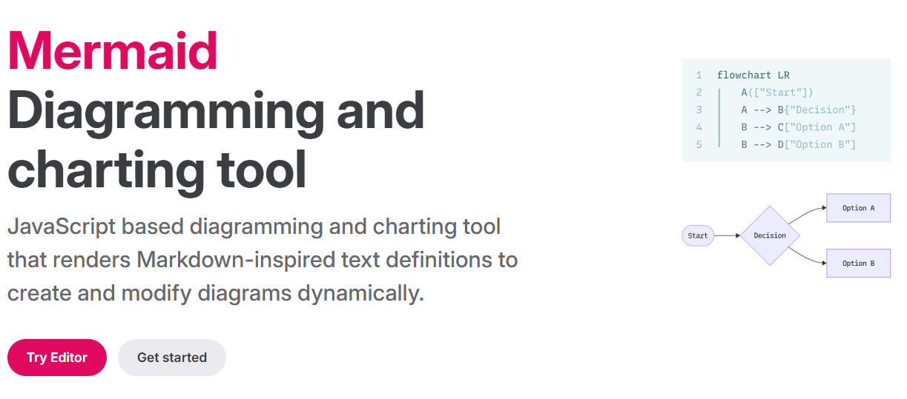

A Beginner’s Guide to Mermaid: Create Diagrams with Code
Welcome! This guide will teach you how to create beautiful, complex diagrams simply by writing text.
What is Mermaid?

- Mermaid is a simple, text-based language that lets you create charts and diagrams.
- Instead of using a mouse to drag and drop shapes, you just write code that describes your diagram.
- Why use Mermaid?
- It’s Fast: Writing text is often much faster than clicking and dragging.
- It’s Easy to Edit: Just change a line of text to update your diagram.
- It’s Great for Version Control: You can track changes to your diagrams in Git, just like code.
- It’s Integrated: Mermaid works in many of the tools you already use, like GitHub, GitLab, Notion, and other Markdown editors.
Getting Started: The Mermaid Live Editor
The best way to learn is by doing. We will use the Mermaid Live Editor.
- Open this link in a new tab: https://mermaid.live
- You will see a “Code” panel on the left and a “Diagram” panel on the right.
- Delete any text in the “Code” panel and you’re ready to start.
Let’s make your first diagram. Copy and paste the code below into the “Code” panel:
graph TD
A[Hello] --> B[World]Instantly, you should see a diagram appear:
[Hello] –> [World]
Congratulations! You’ve just made your first Mermaid diagram.
Part 1: Flowcharts (The Basics)
Flowcharts are the most common diagram to start with.
1. Declaration: You always start by declaring your diagram type. For flowcharts, this is graph followed by a direction.
graph TD(Top to Down)graph LR(Left to Right)
- Nodes (The Shapes):
A node is a shape with text. You give it a unique ID (like A or B) and then define its shape and text.
| Shape | Syntax | Example Code |
|---|---|---|
| Rectangle (Default) | id[Text] |
A[Start] |
| Rounded Rectangle | id(Text) |
B(Process) |
| Circle | id((Text)) |
C((End)) |
| Diamond (Decision) | id{Text} |
D{Is it Friday?} |
- Links (The Arrows):
You connect nodes using arrows. You can also add labels to the arrows.
| Link Type | Syntax | Example Code |
|---|---|---|
| Arrow Link | --> |
A --> B |
| Labeled Link | -- "label" --> |
D -- "Yes" --> C |
| Dotted Link | -.-> |
A -.-> C |
Example: “Should I Buy Coffee?” Flowchart
Let’s combine these to make a useful flowchart. Copy this into the Live Editor.
%% This is a comment. Mermaid ignores it.
graph TD
A[Start] --> B{Am I sleepy?}
B -- "Yes" --> C(Buy Coffee)
B -- "No" --> D{Do I have a meeting?}
D -- "Yes" --> C(Buy Coffee)
D -- "No" --> E((End))
C --> EThis code creates a clear decision-making process.
Part 2: UML Class Diagrams (The Core Skill)
This is one of the most powerful features of Mermaid. It’s perfect for planning a database or an application. (This will use the syntax we’ve been discussing).
1. Declaration: Start with classDiagram.
- Defining a Class:
A class is a box with a name, attributes, and methods.
classDiagram
class Customer {
-int customerId
-string name
+placeOrder(order) : void
+getHistory() : Order[]
}- Visibility: The
+(public), (private), and#(protected) symbols define visibility. - Attributes:
+attributeName: type(e.g.,string name) - Methods:
+methodName(parameters): returnType(e.g.,+getHistory() : Order[])
- Relationships (The Lines):
This is how you show how classes are connected.
| Relationship | Syntax | Meaning |
|---|---|---|
| Inheritance | Parent <|-- Child |
“Child” is a “Parent” |
| Composition | Whole *-- Part |
“Part” cannot exist without “Whole” |
| Aggregation | Whole o-- Part |
“Part” can exist without “Whole” |
| Association | ClassA -- ClassB |
“ClassA” is related to “ClassB” |
- Multiplicity (The Numbers):
You add multiplicity in quotes “” to define the business rules for a relationship.
"1"or"1..1": Exactly one"0..*"or"*": Zero or more"1..*": One or more"0..1": Zero or one
Example: E-Commerce System Class Diagram
This is a complete example showing a Customer placing an Order, which has many OrderItems. This is the classic way to model a Many-to-Many relationship.
classDiagram
direction LR %% Left-to-Right layout is nice here
%% --- Classes ---
class Customer {
+int CustomerID
-string Name
-string Email
+placeOrder()
}
class Order {
+int OrderID
-date OrderDate
-string Status
+calculateTotal()
}
class Product {
+int ProductID
-string SKU
-string Description
-double Price
}
%% This is the 'Linking Table' for the M:N relationship
class OrderItem {
+int Quantity
+double PriceAtTimeOfSale
}
%% --- Relationships ---
%% 1. Customer places 0 or more Orders
%% 2. An Order belongs to exactly 1 Customer
Customer "1" -- "0..*" Order : "places"
%% Order and Product are Many-to-Many,
%% so we resolve it with the OrderItem class.
%% 1. An Order has 1 or more OrderItems
%% 2. An OrderItem is part of exactly 1 Order
Order "1" *-- "1..*" OrderItem : "contains"
%% 1. A Product can be in 0 or more OrderItems
%% 2. An OrderItem includes exactly 1 Product
Product "1" -- "0..*" OrderItem : "includes"Part 3: Sequence Diagrams (A Quick Look)
Sequence diagrams are great for showing how different systems (or objects) interact over time.
1. Declaration: Start with sequenceDiagram.
2. Participants: These are the “columns.”
participant Aparticipant B
3. Messages:
A ->> B: Message Text(Solid line, solid arrow for a call)B -->> A: Reply Text(Dotted line, solid arrow for a reply)
4. Activations: Use activate and deactivate to show when a participant is “working.”
Example: User Login Sequence
sequenceDiagram
participant User
participant WebServer
participant Database
User ->> WebServer: 1. POST /login (username, password)
activate WebServer
WebServer ->> Database: 2. FindUser(username, hashedPassword)
activate Database
Database -->> WebServer: 3. UserRecord
deactivate Database
WebServer -->> User: 4. Respond with AuthToken
deactivate WebServerYour Next Steps
You’ve learned the three most common diagram types!
- Practice: The best way to learn is to model things you know. Try to make a flowchart of your morning routine or a class diagram for your favorite hobby (e.g.,
Book,Author,Library). - Use Comments: Use
%%at the start of a line to write a comment. This is very helpful for complex diagrams. - Explore the Docs: Mermaid can do so much more! (Gantt charts, Pie charts, ER diagrams, etc.). The Official Mermaid Documentation is the best place to learn more.
Congratulations on learning a new and powerful skill!